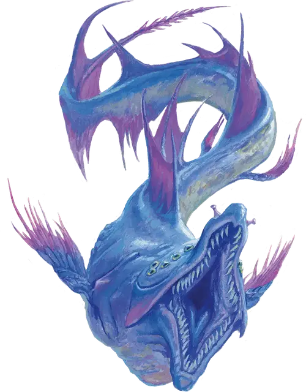

Космический угорь
Space Eel
Маленький Зверь, без мировоззрения

Класс Доспеха 14
Хиты 7 (2к6)
Скорость 10 футов, летая 30 футов
| мод | спас | ||
|---|---|---|---|
| СИЛ | 12 | +1 | +1 |
| ЛОВ | 18 | +4 | +4 |
| ТЕЛ | 11 | +0 | +0 |
| мод | спас | ||
|---|---|---|---|
| ИНТ | 1 | −5 | −5 |
| МДР | 10 | +0 | +0 |
| ХАР | 1 | −5 | −5 |
Чувства тёмное зрение 60 футов, пассивное Восприятие 10
Опасность 1/2 (100 опыта)
Бонус мастерства +2
Особенности
Необычная природа. Угорь не нуждается в воздухе.
Действия
Мультиатака. Если угорь не прицеплен к существу, он совершает одну атаку Укусом и одну атаку Хвостовым шипом.
Укус. . Рукопашная атака оружием: +3 к попаданию, досягаемость 5 фт., одно существо. Попадание: 4 (1к6 + 1) колющего урона, и угорь прицепляется к цели. Пока угорь прицеплен, он не может атаковать укусом. Вместо этого, цель получает 4 (1к6 + 1) колющего урона в начале каждого хода угря. Угорь может отцепиться бонусным действием. Существо, в том числе и цель, могут действием отцепиться от угря.
Хвостовой шип. . Рукопашная атака оружием: +3 к попаданию, досягаемость 5 фт., одно существо. Попадание: 3 (1к4 + 1) колющего урона, и цель должна преуспеть в спасброске Телосложения Сл 10, иначе станет отравленной на 1 минуту. Пока это отравление действует, цель также парализована. Цель может повторять спасбросок в конце каждого своего хода, оканчивая эффект на себе в случае успеха.
Описание
Космические угри избегают столкновений с более крупными существами, только если не умирают с голода. Эти пятифутовые падальщики могут следовать за магическим кораблем и питаться корабельными пиявками, которых они отрывают от корпуса. Охотники Дикого космоса ловят и убивают угрей ради их мяса. Однако, это проще сказать, чем сделать.